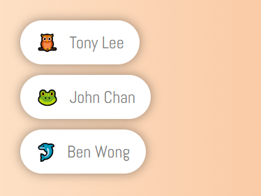
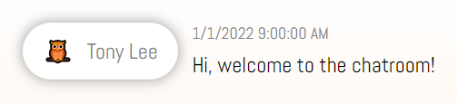

However, it does not contain the required JavaScript code for the online user list and chatroom functionalities
In this lab, you will download a new set of the starting code
Some files are new and some other replace the files that you have got from the last lab
We assume that you have only made changes to the following files in lab 5:
chat_server.js
data/users.json
public/scripts/registration.js
public/scripts/authentication.js
Before you download the new starting code, make sure you have made a backup of the previous files
If you are sure you have backed up the files, you can download the starting code for this lab here
You can then extract it somewhere in your local folder
After extracting the zip file, you will have the following files:
Files Related to the Server-side Operations
Node.js File
chat_server.js(Same as lab 5 - You need to replaced this)
The web server of the chatroom (You are expected to overwrite this file with the one you have worked on in lab 5)
JSON File
data/users.json(Same as lab 5 - You need to replaced this)
The user 'database' of the chatroom (You are expected to overwrite this file with the one you have worked on in lab 5)
data/chatroom.json(New)
The 'database' of the chatroom content
Files Related to Client-side Operations
HTML File
public/index.html(Updated)
The entry point of the chatroom in the browser
CSS File
public/style.css(Same as lab 5)
The CSS rules of the web page
JavaScript Files
public/scripts/avatar.js(Same as lab 5)
The list of avatars the user can choose from
public/scripts/ui.js(Updated)
The JavaScript code for handling UI related operations
public/scripts/registration.js(Same as lab 5 - You need to replaced this)
The JavaScript code for processing the registration request (You are expected to overwrite this file with the one you have worked on in lab 5)
public/scripts/authentication.js(Same as lab 5 - You need to replaced this)
The JavaScript code for handling authentication related operations (You are expected to overwrite this file with the one you have worked on in lab 5)
public/scripts/socket.js(New)
The JavaScript code for handling the WebSocket related initialization and operations
All these files should be stored under the same folder
To remind you again, you are expected to overwrite the following files with the ones you have done in lab 5
(make sure you have backed these up somewhere!):
chat_server.js
data/users.json
public/scripts/registration.js
public/scripts/authentication.js
In this lab, you will mostly work on these files:
chat_server.js
data/chatroom.json
public/scripts/socket.js
1.2. The Frontend
In this lab, you will work with two components that you have not used in lab 5:
The online user list
The chatroom area
The HTML code for them are already in the HTML file you have got before
In the HTML file in the new starting code, we have removed for you a couple of text saying 'This function will be implemented in Lab 6', which is not useful anymore
The Online User List
The online user list is on the right side of the HTML page:
It is created by the following HTML using a <div>...</div>:
The first JavaScript file is the Socket.IO library which is coming from the server that you make later
The second file socket.js is a module for handling WebSocket related operations in the HTML page
Similar to other JavaScript files, this JavaScript file is written in a module pattern structure:
const Socket = (function() {
// This stores the current Socket.IO socket
let socket = null;
// This function gets the socket from the module
const getSocket = function() { ... };
// This function connects the server and initializes the socket
const connect = function() { ... };
// This function disconnects the socket from the server
const disconnect = function() { ... };
// This function sends a post message event to the server
const postMessage = function(content) { ... };
return { getSocket, connect, disconnect, postMessage };
})();
This file contains code for handling the communication between the browser and the server using WebSocket
For example, if you want to connect to the Socket.IO server in the server program, you can run Socket.connect()
Later down the lab page, you will need to look at some of the code in this file
when you work on the communication between the browser and the server
From the HTML page, you also link to ui.js which you have already seen in lab 5:
<script src="scripts/ui.js"></script>
In this lab, this file has been updated so that there are two more UI components that you can use:
A component called OnlineUsersPanel, and
A component called ChatPanel
They correspond to the two components that are discussed at the start of this section
You do not need to change the code in this file for the lab
However, you may be interested to see what it is doing with the UI and the results from the WebSocket communication
1.3. The Backend
The Web Server
It is the same Express web server from your lab 5 and you should have completed the required sign-in/out and registration functionalities
In this lab, you will extend the web server to include WebSocket capability
The online user list and chatroom content are both managed using the WebSocket connection
Here is a summary of the messages that you send between the browser and the server:
From the browser, you always send the event to the server only:
Description
Event Name
Message Content
Request for the online user list
get users
-
Request for the chatroom messages
get messages
-
Post a new message in the chatroom
post message
text content of the message
From the server, you may send the event to one browser, or broadcast to all connected browsers:
Description
Type
Event Name
Message Content
Add a signed-in user to the online user list
Broadcast
add user
{ username, avatar, name }
Remove a disconnected user from the online user list
Broadcast
remove user
{ username, avatar, name }
Send the current online users
Socket
users
JSON representation of the online user list
Send the chatroom messages from the JSON file
Socket
messages
JSON representation of the chatroom messages
Add a new message to the chatroom
Broadcast
add message
JSON representation of the chatroom message
The code for the browser side has been mostly given to you in socket.js
It includes code responsible for both sending (i.e. emit()) and receiving (i.e. on(...)) of the events
Your task in this lab is mainly about building up the code for the Socket.IO server
Data Storage
You still use users.json to store the user accounts
In addition, in this lab, a new 'database' file called chatroom.json is given to you
This file stores the chatroom messages that have been posted to the chatroom so far
The initial content of the file has only one message:
As you can see, the file contains a JavaScript array [...] currently with one item
The item represents a single message in the chatroom with the following data:
The user who has posted the message, in the form of { username, avatar, name }
The date and time the message was posted, and
The content of the message
If any new messages are posted to the chatroom, they will be added to the end of this array
1.4. Installing Socket.IO
Before using the starting code, you need to make sure the Socket.IO package is installed in your folder
You can do that using npm as usual, i.e.:
npm install socket.io
Make sure it is installed successfully by examining the package.json inside the folder
It should have socket.io listed inside, similar to this:
"socket.io": "^4.4.1"
However, even if you install it successfully, when you access the system from the browser,
you will still see a related error message in the console:
This is because you have not yet created the Socket.IO server, which you will do in the next section
2. Creating the Socket.IO Server
At this point, you should have replaced the chat_server.js
with the file you have worked on in lab 5 from last time
If you look near the end of the file, you will find this section:
//
// ***** Please insert your Lab 6 code here *****
//
You will add some code there to create a Socket.IO server
To do that, you can refer to the
lecture notes
on how to create the Socket.IO server
After adding the code, you should have your Socket.IO server created in the io variable
Apart from those lines of code, it is important that the web server is started
using the http server, i.e. httpServer, instead of the Express app, i.e. app
So you will need to change this code:
app.listen(8000, () => {
console.log("The chat server has started...");
});
to this:
httpServer.listen(8000, () => {
console.log("The chat server has started...");
});
After doing this, your server is ready to accept new WebSocket connections, which you will create in the next section
Using the Session
In the previous lab, you have set up a session for any user who has signed in the system
Here is a reminder of the code that you should have done:
Let's make this object available in the server, which is obviously empty at the start:
const onlineUsers = {};
You should put the above line of code in chat_server.js in an appropriate place
3.1. Managing the Online User List
As described above, you need to maintain an online user list in the form of a JavaScript object
JavaScript code has already been given to you so that the browser will
connect to the Socket.IO server when a user signs in, as shown below in ui.js:
Authentication.signin(username, password,
() => {
hide();
UserPanel.update(Authentication.getUser());
UserPanel.show();
Socket.connect(); // Connect to the Socket.IO server here
},
(error) => { $("#signin-message").text(error); }
);
Similarly, when a user signs out from the server,
the following code is used to disconnect the user from the Socket.IO server
Authentication.signout(
() => {
Socket.disconnect(); // Disconnect from the Socket.IO server here
hide();
SignInForm.show();
}
);
You can listen for the corresponding 'connect' and 'disconnect' events on the server to manage the online user list
Adding a New User
You add a new user to the online user list when a user connects to the Socket.IO server
From the
lecture notes,
you know you can wait for a new connection using the connection event on the server
So in this task, you can use this event to add a new user to the online user list, i.e:
io.on("connection", (socket) => {
// Add a new user to the online user list
...
});
The user to be added to the online user list is the user who has currently signed in the system
That means you can find the user's information from the session data socket.request.session.user
You may want to make sure that you will add the user to onlineUsers,
only if socket.request.session.user is available, i.e. using an if statement
If you want to, you can keep track of the online users in the system by printing it out, for example,
by doing a console.log() every time, i.e.:
io.on("connection", (socket) => {
// Add a new user to the online user list
...
console.log(onlineUsers);
});
Removing a User
The code in the previous step keeps on adding users to the online user list
Even if a user signs out or disconnects from the server, the user will
still remain in the list
It would be great if you can remove the user when that happens
To do that, you can make use of the disconnect event of the browser's socket
Note that the connection event in the previous part occurs to the Socket.IO server,
whereas in this part, you need to work on the browser's socket
You can do that by adding this code inside the connection event,
where the socket variable is available:
socket.on("disconnect", () => {
// Remove the user from the online user list
...
console.log(onlineUsers);
});
Again, you can get the current user from the session data, just like what you do when you add the user
To remove the user from onlineUsers, you can use the delete command on the key (i.e. username) of the object, e.g.:
delete onlineUsers["may"];
The console.log() in the above code is just for debugging purpose, so that
the content of the online user list is shown every time a user disconnects from the server
Testing the Code
Once you finished the previous two parts of the code, you can test them to see
if your online user list contains the correct content
You cannot use the same browser to test that because the same browser will give
you the same session even if you use a new window/tab
To keep things simple, you can, for example:
Use two different browsers, or
Use the same browser but one is in a normal mode and another one is in incognito mode
After starting the server, you should see the following output in the terminal:
> node chat_server.js
The chat server has started...
You can use the following sequence to test things out:
When the user Tony signs in the system, the output is:
{ tony: { avatar: 'Owl', name: 'Tony Lee' } }
Then when the user May signs in the system, the output is:
Afterwards, when Tony signs out from the system, the output is:
{ may: { avatar: 'Rabbit', name: 'May Wong' } }
Finally, when Tony signs out from the system, the output is:
{}
If you are sure everything is working correctly, you may delete the console.log()
3.2. Showing the Online User List
After signing in the system, the online user list should show the currently signed-in users
However, the previous code only shows the online users in the terminal
In this task, you will write the code to send the the online user list to the browser
so that the browser can display the list properly
The events/messages that you need to use in this part is shown below:
Direction
Description
Type
Event Name
Message Content
Browser to Server
Request for the online user list
-
get users
-
Server to Browser
Send the current online users
Socket
users
JSON representation of the online user list
The code to do that on the browser side has been given to you,
which you can find in socket.js:
socket = io();
// Wait for the socket to connect successfully
socket.on("connect", () => {
// Get the online user list
socket.emit("get users");
...
});
// Set up the users event
socket.on("users", (onlineUsers) => {
onlineUsers = JSON.parse(onlineUsers);
OnlineUsersPanel.update(onlineUsers);
});
The above code sends a message get users to the server when the browser connects to the server successfully
Then, the browser expects to get back the online user list from the server in a users event
However, the code in the server is not yet implemented
You need to write the corresponding listener so that all online users
can be sent back to the browser
Based on the above code, you can see the event name that you need to listen for on the server is get users
Note that this event does not carry any message content
Over to chat_server.js, you can write your event listener, like this:
socket.on("get users", () => {
// Send the online users to the browser
...
});
Remember to put this code inside the connection event
Inside the above code, you send the online users back to the browser
The online user list is sent using a JSON representation, i.e. using JSON.stringify()
The event name you need to use is users, which corresponds to the code you have seen in the browser
After finishing the event listener, you should be able to see the online users right after signing in
when you have more than one users on the system, like this:

In the above example, three users have already signed in the system
3.3. Broadcasting When Users Sign In and Out
After finishing the previous sections, the online user list seems to be working now
However, while you are in the system, if another user signs in, you will not see his/her name in the online user list
Similarly, you do not see anyone removed from the list when a user signs out from the system
Simply speaking, your online user list never changes once you have signed in!
It is simply because you (or the server) have not told anyone when a new user comes in, or a signed-in user leaves
You have already written some code when those two situations happen,
i.e. inside the connection and disconnect events
You just need to tell everybody about them
In this task, you will add some code to broadcast when a new user signing in, as well as broadcast when a user signs out
The broadcast events/messages that you will use are shown below:
Direction
Description
Type
Event Name
Message Content
Server to Browsers
Add a signed-in user to the online user list
Broadcast
add user
{ username, avatar, name }
Server to Browsers
Remove a disconnected user from the online user list
Broadcast
remove user
{ username, avatar, name }
The code on the browser has been given to you for listening to these two broadcast events inside socket.js:
socket.on("add user", (user) => {
user = JSON.parse(user);
OnlineUsersPanel.addUser(user);
});
socket.on("remove user", (user) => {
user = JSON.parse(user);
OnlineUsersPanel.removeUser(user);
});
You can refer to the above event listeners and construct the events that you need to send from the server
Remember that you are doing a broadcast so you need to use io.emit() instead of socket.emit()
The user in both events is sent in the following form:
{ username, avatar, name }
After completing the broadcast messages, the online user list is totally working so that:
You see the currently signed-in users in the system when you sign in
When a user signs in, you see the user added to the online user list
When a user signs out or disconnects, you see the user removed from the online user list
4. The Chatroom
After finishing the online user list, you can now work on the chatroom content
Here are your tasks:
Showing the chatroom content when a user successfully signs in
Posting a new message by entering the message in the new message input and pressing Enter
Updating the chatroom for everyone whenever a new message is posted to the server
Some of the tasks are similar to what you have done for the online user list,
and some of them are similar to what you have done for the previous lab!
4.1. Getting the Chatroom Messages
The events/messages that you will use in this part is shown below:
Direction
Description
Type
Event Name
Message Content
Browser to Server
Request for the chatroom messages
-
get messages
-
Server to Browser
Send the chatroom messages from the JSON file
Socket
messages
JSON representation of the chatroom messages
When a user signs in, the browser will send a get messages event to the server
The code to do that has been given in socket.js here:
socket = io();
// Wait for the socket to connect successfully
socket.on("connect", () => {
...
// Get the chatroom messages
socket.emit("get messages");
});
socket.on("messages", (chatroom) => {
chatroom = JSON.parse(chatroom);
ChatPanel.update(chatroom);
});
The structure of the code is similar to what you have done for the online user list
Therefore, you can complete this part by writing the corresponding event listener in the server
so that the content of the chatroom can be sent back to the browser, as shown below:
socket.on("get messages", () => {
// Send the chatroom messages to the browser
...
});
Unlike the online user list, the chatroom messages are stored inside the JSON file chatroom.json
So to send the content back to the browser, you need to read the file back and
then send it
You have already written code to read users.json in the previous lab
Here you can use similar code, i.e.:
Use readFileSync(), to get the file content back, e.g.:
You may find it funny that the above code uses readFileSync() and JSON.parse()
to change the JSON data to an JavaScript object
And then immediately change the object back to JSON using JSON.stringify()
It looks like the two JSON commands are redundant; however, if you only use readFileSync(),
it will not work
In case you want to save a bit of redundant JSON processing,
you can consider adding an additional 'encoding' parameter to readFileSync(), which looks like this:
fs.readFileSync(..., "utf-8")
After finishing the event listener, you will see the following chatroom content if you sign in the system:

This is the initial content of chatroom.json
4.2. Posting a New Message
Now that the chatroom is ready, the user can post a message by
entering the message in the new message input and then pressing Enter
This is handled in the socket.js file with the following code:
As you should already have the message object from the previous step, you can easily broadcast this
new message to everyone using the Socket.IO server
After doing this, the new messages should be shown correctly and immediately after they are posted:
5. Improvement
In the previous sections, you mostly work on the server program so that the WebSocket communication can be completed
In this final part of the lab, you will need to add a feature to the chatroom on both the browser and server completely by yourself
The idea is simple:
When a user types something in the new message input,
every other users will see a message immediately
above the field showing "XXX is typing...",
where XXX is the name of the user
When that user stops typing, the message will
disappear after a while, say 3 seconds
Here is an example when the 'typing' message is shown:
To do that, you probably need to:
Add a <div>...</div> above the input field for showing the message
Use appropriate styles for the <div>...</div>
Add a keydown listener to the input field
Send a WebSocket message to the server when a key is pressed in the input field
Broadcast a corresponding WebSocket message to everyone after receiving the above message in the server
Show the "XXX is typing..." message inside the <div>...</div> created above for anyone who receives the broadcast message
However, probably not on the browser where the user is typing though as it will be odd to see your own name showing up above the input while you are typing
Clear the <div>...</div> after 3 seconds when no more 'typing' message is received
You can:
choose to work in the JavaScript file such as socket.js and ui.js, or
write everything in document.ready(), as long as it works correctly
Marking and submission
The submission is the combined work from both lab 5 and lab 6